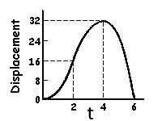
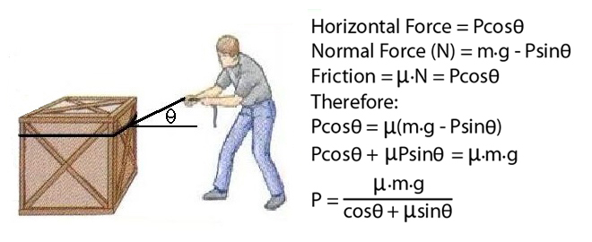
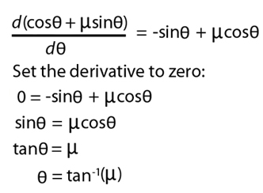

Calculus and Max/Min Problems
Another very useful application of calculus is to solve problems that seek an optimal solution. When a function is at a maximum value, its slope is zero. Similarly, when a function is at a minimum value, its slope is also zero. This means that if we can find the derivative of a function (slope) and solve for when it is zero, we can tell exactly when it is at a maximum or minimum. For instance, if we were asked when the maximum displacement occurred given displacement = -t3 + 6t2, we find the derivative of the displacement function and solve for t when the derivative = 0. In this case, the derivative would be velocity and v = -3t2 + 12t. Solving for t when 0 = -3t2+12t, yields t = 4. If we substitute the value of 4 into the original equation, we will find the maximum displacement is exactly 32.

We know that if we drag a box across the floor, the horizontal component of the pulling force (P) must be equal to the friction force. The friction force is the product of the coefficient of friction (μ) and the normal force. If we pull the box at an angle θ, the vertical component reduces the normal force which reduces the friction forces and requires less of a pulling force (P). What is the optimum angle (θ) that reduces P to a minimum?

We can see from the calculations to the left, that the larger the denominator (cosθ + μsinθ), the smaller the pulling force (P). Therefore, if we can maximize the denominator, we will minimize P.
To find the ideal angle that requires the least pulling force, we need to maximize the denominator.
In order to maximize the denominator, we differentiate the denominator with respect to θ and set the derivative to zero. Now, when we solve for θ, we will have the angle that minimizes the pulling force.

Notice that the optimum angle only depends on the coefficient of friction between the box and the floor (μ). The angle does not depend on the size or weight of the box which means that the person should adjust the angle down if the surface friction is reduced and increase the angle if the surface becomes more rough.
Also notice the posture of the person pulling the box. The angle that requires the least amount of force may not be ideal for the person pulling the box. This is a fundamental difference between engineering and biomechanics because the human factor must be considered in addition to laws of physics and engineering principles.
Therefore, if we can find the derivative of a function, we can find an optimum or ideal result. This is quite important in biomechanics because we would like to know the best way of doing something, or the least risk of injury, etc.
Product, Quotient and Chain Rules
Quite often, the function is not a polynomial or simple trigonometric function. In some cases the function is a combination of other functions that cannot be expressed as a single polynomial.
For example, consider the ski jumper who knows that air resistance places a drag force that is proportional to his angle of attack (β) that will slow his motion. He also knows that he can create lift with an angle of attack which help him travel further. Since lift can only be achieved at the expense of drag, he must find the angle of attack that has the highest lift-to-drag ratio. Wind tunnel testing has revealed the lift (L) and drag (D) equations as functions of the attack angle (β). In order to find the maximum ratio, we must differentiate the L/D function and solve for β when the derivative is 0.

In this case, we used the quotient rule. Other important rules are the product rule and the chain rule. As a reference, here are these rules where h(x) is the equation to be differentiated and is composed of equation f(x) and g(x).

Newton-Raphson Method
The Newton-Raphson method is a very powerful tool that allows us to solve algebraic equations that are difficult/impossible to factor. For example, if we needed to find the value for x in the equation 0 = x3 + x - 5, we would need to factor or isolate x on one side of a solvable algebraic equation. This is not possible and the term transcendental equation is used to describe these equations. However, there is an iterative approach called the "Newton-Raphson method" that can yield a result that approaches an exact solution. The method requires that we can differentiate the original equation. The figure below shows the method starting with an initial guess of x = 1 and using the function and the derivative to make successive guesses that approach the final solution of 1.51598 that is within six decimal places of the exact result.

Bottom Line:
Calculus is a tool that biomechanists can use when we wish to determine kinematic variables like displacement, velocity, and acceleration. It is very useful in optimization cases and many other applications of biomechanics. Like all tools, the better our skill at using the tool, the more effective we can be. This lecture is in no way a complete review of calculus and the serious biomechanist may need to explore more advanced aspects of calculus such as partial differential equations (∂y/∂x) and numerical methods of solving differential equations. However, this brief exploration of calculus should enable a clear understanding of functions and how biomechanists use them.